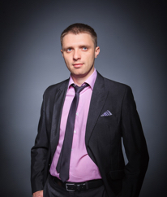

Раевич А. А.
Руководитель развития «Легкой» сети УБРиР
«Легкий» офис — это симбиоз дистанционного и классического банка в формате low cost. В новых отделениях, предназначенных исключительно для обслуживания малого бизнеса, предприниматели могут открыть расчетный счет, получить POS-терминал для приема оплаты по банковским картам, а также оформить овердрафты. А депозиты для бизнеса размещаются через интернет-банк в «три клика». В наших офисах все услуги могут быть оказаны дистанционно – с выездом менеджера на место ведения бизнеса клиента.
Мы видим довольно высокий спрос на продукцию банка со стороны микро- и малых предприятий и расширяем территорию своего присутствия, становясь, таким образом, ближе к каждому клиенту. Темпы прироста базы юридических лиц и отзывы клиентов дают нам понять, что мы выбрали правильную тактику, предоставляя бизнесменам качественные услуги по ценам ниже, чем у конкурентов».